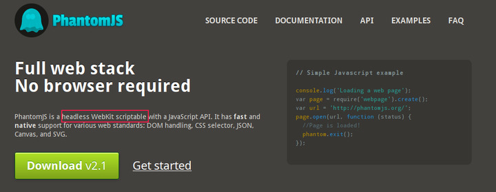

在Python中进行浏览器测试时,一般我们会选择selenium这样的库来简化我们工作量。而有些时候,为了对一些动态数据进行抓取,我们会选择PhantomJs这样的工具。而在selenium中我们也可以集成Phantomjs对应的驱动,可以很方便的进行对应的操作。
在Phantomjs的官方网站上,我们可以看到类似如下的字样:

在这里就引申出1个headless mode的概念。而phantomjs与我们常用浏览器的区别就是,它不需要GUI界面也可以运行,因此更为节省资源。
实际上,对于动态数据的抓取问题对我来说已经是很多年之前的事情,无论是基于Phantomjs的casperjs,还是使用Qt、GTK这样的GUI包编写浏览器来进行操作,或者是这里要介绍的selenium的方式,都已经成为过去式了。
而自从在新公司从事新的工作后,对于这样的问题实际上基本上都懒得动手了,不如让同事去做吧。
大概在1个月前,之前公司坐我隔壁的那个哥们写了1个分布式的爬虫框架(实际上关于这方面,个人觉得完全没有必要,流行的scrapy和pyspider那个好用)时遇到了这样1个问题,当时他在selenium中使用Phantomjs对某个页面进行抓取,然后发现有些东西使用Phantomjs抓取不下来,然后只要使用firefox的方式来进行。这个哥们的博客可以点击。
而在不久前,chrome宣布支持headless模式,而后firefox跟随的新闻,再次勾起我无尽的回忆。
实际上,phantomjs这个工具对于Python的人来说很不习惯,而且还有一些莫名其妙的问题。那么,我们就来谈谈在Firefox和Chrome浏览器不原生支持headless模式下,如何使用selenium来实现headless模式进行动态数据的抓取。
在这里为了方便说明,我们在Linux环境下进行操作,使用的版本如下:
Centos==6.8 Python==2.7.10 selenium==2.53.0 Firefox==45.0
在Linux中有1个很好用的工具xvfb,它是1个X服务可以用于在没有显示器的硬件和物理输入设备上运行,详细的操作可以参考。而关于X服务的内容,请自行百度。比较常见的例子在ssh中进行X11转发。
可以看到,在这里我们需要借助xvfb的方式来实现所谓的headless模式,实际上这个操作就10分钟就完成了。
安装必需的软件包
在这里,我们通过如下的方式安装需要的软件包:
[cat@localhost ~]$ sudo yum install xdg-utils xorg-x11-server-Xvfb xorg-x11-xkb-utils
如果你使用的是基于Debian的系统,比如Ubuntu,那么对应的安装方式可能为:
sudo aptitude install xdg-utils xvfb x11-xkb-utils
安装xvfb的绑定
安装完成xvfb绑定后,一般情况下我们会使用命令的方式来开启虚拟显示。而由于本人比较懒是1个特点,因此我们直接将其与我们的脚本一起集成在一起。
在这里,我们安装1个xvfbwrapper的库,这个库用于在你的Python中开启和关闭xfvb会话。
在这里,我们直接通过pip进行安装:
pip install xvfbwrapper
编写对应的代码
安装完绑定依赖后,我们终于可以愉快的开启编写代码了,在这里我们先引入对应的模块:
from xvfbwrapper import Xvfb接着我们实例化1个实例:
xvfb = Xvfb()接着我们就可以开启及关闭其其会话了:
#!/usr/bin/env python
from selenium import webdriver
from xvfbwrapper import Xvfb
xvfb = Xvfb(width=1280,height=720)
xvfb.start()
print('Start...')
browser = webdriver.Firefox()
browser.get('http://52sox.com')
title = browser.title
print(title)
print("Clean...")
browser.close()
xvfb.stop()在这里,我们将其与selenium进行集成,在这里由于时间的关系,就简单的用于获取个人博客上的标题。
下面我们进行测试:
[cat@localhost ~]$ python headless.py Start... The Kite in the wind Clean...
发现其可以正常的运行。可以说,简单到没有朋友。
参考文章: